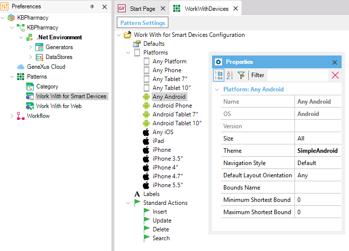
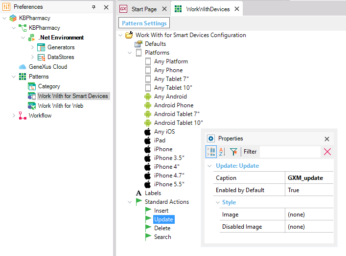

In Preferences / Patterns you have the Pattern Settings for each pattern. Particulary, this document shows what and how can be configurated the "Work With for Smart Devices Pattern" for all instances. Then when you apply Patterns for a Transaction, you will be able to see the configurations done in here, in "Work With for Smart Devices Configuration". This WW for SD Configuration determines some general aspects, such as the sd theme that will be used for each platform created in your layouts  Standard ActionsThe Standard Actions for the work with for smart devices are Insert, Update, Delete and Search. There are some properties that can be set for these actions:
Considerations for iphone: the images used in the Image property, must have only alpha channel, the rgb color is ignored. That applies to all images used in the Application Bar of iOs. 
|
| Backlinks | |
| Default Selected Item Layout property | Category:Work With for Smart Devices object |